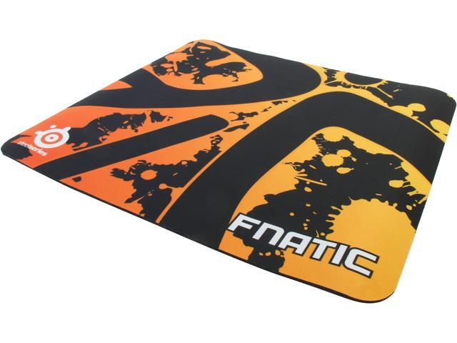

Добро пожаловать на один из крупнейших интернет-магазинов игровых девайсов в СНГ
SteelSeries QcK Heavy


Коврик Steelpad QcK heavy является профессиональным аксессуаром для игр. Steelpad QcK heavy идеально подходит для любителей компьютерных игр, которые используют минимальную чувствительность мыши и для тех, кто работает с графическими приложениями. Коврик выполнен из высококачественного материала на резиновой основе. Эта модель благодаря большой величине и применяемым материалам обеспечивает комфортную игру на любой поверхности стола. Коврик подходит для всех типов мышек. Основной цвет аксессуара – черный. Тип коврика – игровой. Его габариты: 450×400×6 мм. Материал покрытия модели – ткань.
- Совместимость: оптические мыши, лазерные мыши
- Материал поверхности: ткань
- Цвет: fnatic edition
- Подушечка под запястье: нет
- Бортик: нет
- Крепление для кабеля: нет
- Глубина: 400мм
- Ширина: 450мм
- Толщина: 6мм
- Цена: $32